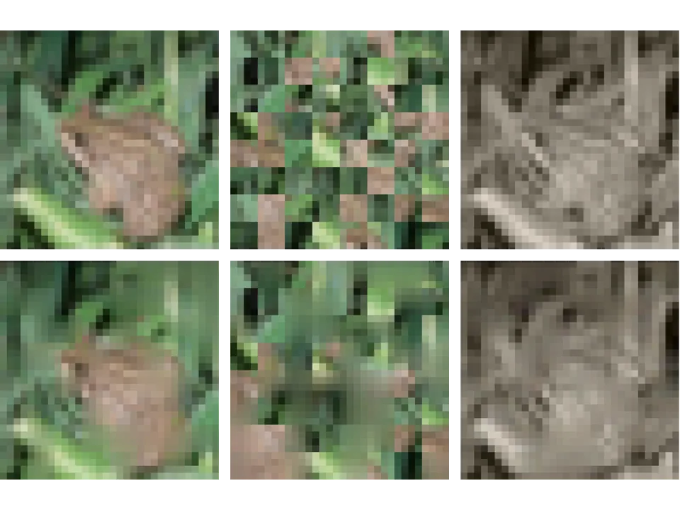
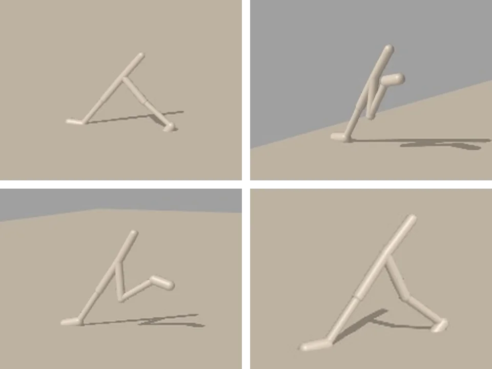

Self-Supervised Learning on Physical Interaction Graphs
Master’s thesis, 2026
Self-supervised learning for graph transformers on physical scenes, where each object is a node in a contact graph that changes over time.
I’m an undergraduate student in Artificial Intelligence, with a minor in Mathematics, and a master’s student in Robotics at the University of Pennsylvania. I work on graph architectures and graph signal processing with Dr. Alejandro Ribeiro, and on representations for event cameras with Dr. Pratik Chaudhari.
Under review at ICASSP 2027
Under review at ICLR 2027
An earlier version, Transferability of Graph Transformers with Convolutional Positional Encodings, was presented at the NPGML Workshop at NeurIPS 2025.
Master’s thesis, 2026
Self-supervised learning for graph transformers on physical scenes, where each object is a node in a contact graph that changes over time.
LyRL, 2026
A recurrent extension of Fast Feature Field (F³) that forecasts event-camera features 100 ms into the future.
Senior design, 2026
An EMG wristband and tactile glove that collect hand-motion and fingertip-force data for training robot hands.
2025
A PPO policy for quadcopter gate racing, trained in Isaac Lab and deployed on a real drone.

2025
How the shape of the mask affects the robustness of masked autoencoder features to visual perturbations.

2025
A contact-invariant trajectory optimizer in JAX/Brax, compared against PPO on Walker2d.